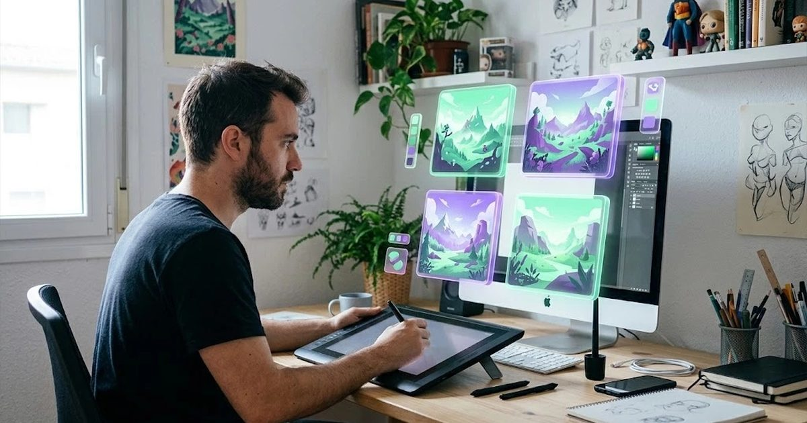

Midjourney es, para muchos diseñadores e ilustradores, el generador de imágenes con IA de mayor calidad estética. Pero también es de los pocos que no tienen plan gratuito, y su sistema de horas de GPU confunde a quien llega nuevo. En esta reseña te explicamos qué ofrece en 2026, cuánto cuesta cada plan, qué significan las «horas rápidas» y cuándo compensa pagarlo frente a las alternativas gratuitas.
Nuestra opinión en 30 segundos
- Lo mejor: calidad artística y coherencia estética difíciles de igualar.
- Lo peor: sin plan gratuito, curva de aprendizaje y peor que otros con texto dentro de la imagen.
- Para quién: diseño, ilustración, publicidad y moodboards profesionales.
- Valoración: 4 / 5.
Precios de Midjourney en 2026
| Plan | Mensual | Anual (por mes) | Horas rápidas de GPU | Modo relajado ilimitado |
|---|---|---|---|---|
| Basic | 10 $ | 8 $ | 3,3 h | No |
| Standard | 30 $ | 24 $ | 15 h | Sí |
| Pro | 60 $ | 48 $ | 30 h | Sí, con modo privado |
| Mega | 120 $ | 96 $ | 60 h | Sí, con modo privado |
Cómo funcionan las horas de GPU
Midjourney no cobra por imagen, sino por tiempo de procesamiento. En modo rápido gastas tus horas incluidas; con Basic dan para unos cientos de imágenes al mes. A partir de Standard tienes modo relajado ilimitado: las imágenes tardan más en generarse, pero no consumen horas. Por eso, para un uso profesional constante, Standard es el plan con mejor relación calidad-precio.
Qué hace bien Midjourney
- Calidad estética: composición, iluminación y texturas con un acabado muy cuidado desde el primer intento.
- Coherencia de estilo: referencias de estilo y de personaje para mantener una misma estética en una serie de imágenes.
- Edición y variaciones: ampliar, rehacer zonas concretas y generar variaciones de una imagen que te gusta.
- Interfaz web: ya no depende de Discord; se usa desde el navegador con una galería organizada.
Dónde se queda corto
- Sin plan gratuito: no puedes probarlo sin pagar al menos un mes de Basic.
- Texto en la imagen: ha mejorado, pero Ideogram o ChatGPT siguen siendo más fiables para carteles o rótulos.
- Curva de aprendizaje: sacarle todo el partido exige aprender parámetros y el vocabulario de sus prompts, mejor en inglés.
- Imágenes públicas: en Basic y Standard tus imágenes son visibles en la galería de la comunidad; el modo privado solo está en Pro y Mega.
Midjourney frente a las alternativas
| Midjourney | Gemini / ChatGPT | Leonardo | Ideogram | |
|---|---|---|---|---|
| Calidad artística | Muy alta | Alta | Alta | Buena |
| Texto dentro de la imagen | Aceptable | Muy bueno | Aceptable | Excelente |
| Plan gratuito | No | Sí | Sí | Sí |
| Precio de entrada | 10 $/mes | Incluido en sus planes | Planes de pago desde unos 10 $/mes | Planes de pago asequibles |
Si no quieres pagar, empieza por nuestras alternativas gratis a Midjourney.
Un caso práctico
Una agencia creativa de cuatro personas usa Midjourney Standard para los moodboards y conceptos de campaña: el modo relajado les permite generar cientos de variaciones sin preocuparse por las horas. Para las piezas finales con texto usan otra herramienta, y siempre revisan que ninguna imagen se parezca a obras o marcas existentes. Ejemplo ilustrativo.
Veredicto
Midjourney sigue siendo la referencia en calidad estética y compensa si las imágenes son parte central de tu trabajo. Para un uso ocasional, las alternativas gratuitas cubren la mayoría de necesidades. Si decides pagar, empieza por Basic un mes y pasa a Standard solo si vas a generar a diario.
Preguntas frecuentes
¿Cuánto cuesta Midjourney?
En 2026 Midjourney tiene cuatro planes: Basic por 10 $ al mes, Standard por 30 $, Pro por 60 $ y Mega por 120 $. Con pago anual son un 20 % más baratos: 8, 24, 48 y 96 $ al mes.
¿Midjourney tiene prueba gratuita?
No en su web. En 2026 no hay prueba gratuita de Midjourney; la única forma de probar sin pagar es a través de las alternativas gratuitas o de promociones puntuales.
¿Qué plan de Midjourney me conviene?
Basic sirve para probar y uso ocasional. Standard es el más recomendable para uso profesional porque incluye modo relajado ilimitado. Pro y Mega solo compensan con un volumen muy alto o si necesitas el modo privado.
¿Puedo usar las imágenes de Midjourney en mi negocio?
Con un plan de pago puedes usarlas comercialmente según sus condiciones. Las empresas con más de un millón de dólares de facturación anual deben usar el plan Pro o Mega. Revisa siempre los términos vigentes.
¿Midjourney funciona en español?
Entiende instrucciones en español, pero suele dar mejores resultados con prompts en inglés, sobre todo para estilos y términos técnicos de fotografía.
Escrito y revisado por el equipo editorial de HerramientasIA. No tenemos acuerdos comerciales con las herramientas mencionadas. ¿Ves un dato desactualizado? Avísanos.